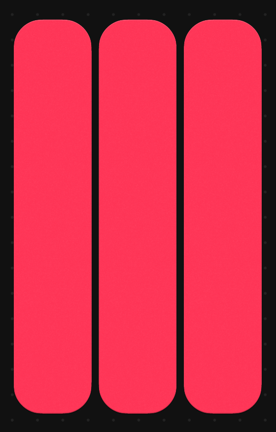

Website inspiratie

Over deze website
Deze portfolio-website dient als een toonkast van mijn vaardigheden,
projecten en professionele ontwikeling. Ontworpen met een
minimalistische zwart-witte esthetiek, legt het de nadruk op inhoud
boven opvallende designelementen.
Het interactieve kaartsysteem stelt bezoekers in staat om zich op een
stuk informatie tegelijk te concentreren, terwijl ze toch het
overzicht van de totale structuur behouden. Beweeg met de muis over
een kaart om deze uit te klappen met gedetailleerde inhoud, terwijl de
andere verkleinen tot eenvoudige pilaren.
Dit ontwerp weerspiegelt mijn aanpak van probleemoplossing: helder,
gefocust en efficient, met de mogelijkheid om in te zoomen op details
wanneer dat nodig is.